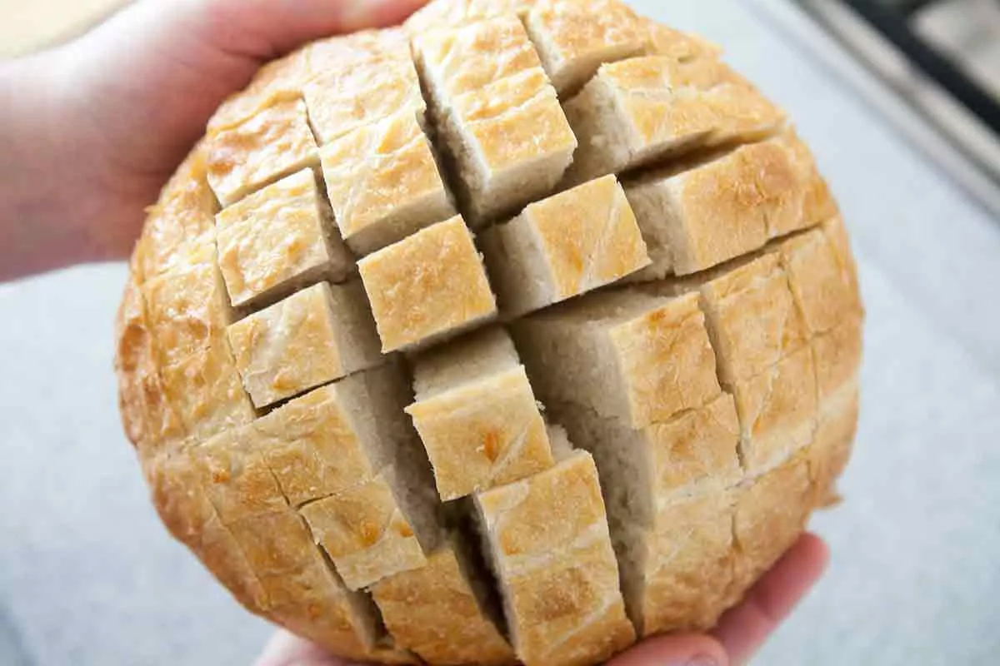

Ingredients:
-1 rustic loaf of bread, unsliced, either Italian or French
-12 ounces shredded Monterey Jack cheese
-1/4 cup (less or more to taste) chopped pickled jalapeños
-1/4 cup chopped green onions, including greens
1/4 cup (4 Tbsp) butter, melted
Method:
1-Slice bread in cross hatch pattern:
Preheat the oven to 350°F. Slice the bread almost all the way through (not all the way) in a cross hatch pattern, spacing an inch between the slices.

2-Make cheese mixture:
Place the shredded cheese in a large bowl. Toss with the green onions and jalapeños. Pour over with melted butter and use your clean hands to toss, to distribute the butter evenly through the cheese.
3-Stuff bread with cheese mixture:
Place the bread on a large sheet of aluminum foil (large enough to wrap the bread) on a baking sheet. Stuff every crevasse with the cheese mixture.
Wrap with the aluminum foil. At this point you can make ahead and refrigerate until ready to bake.
4-Bake:
Bake in a 350°F oven for 15 minutes. Then uncover the foil from the bread and cook for 10 minutes more, until all of the cheese has melted.